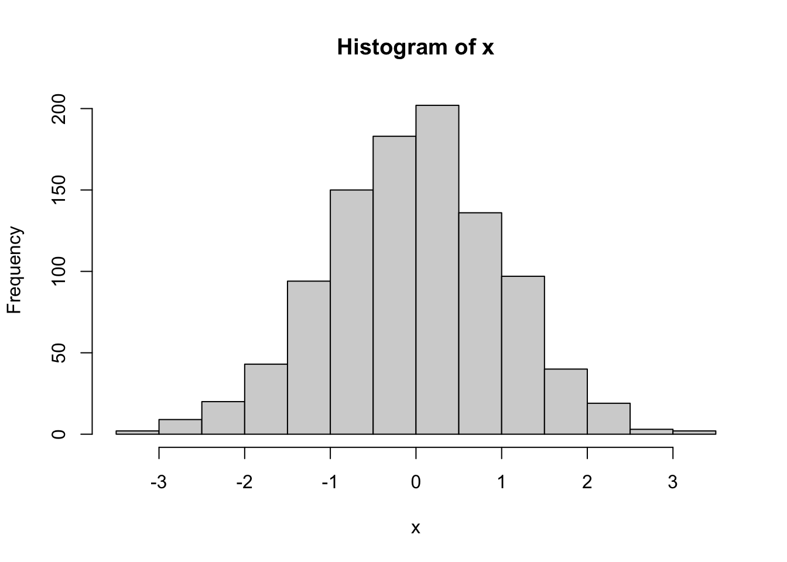
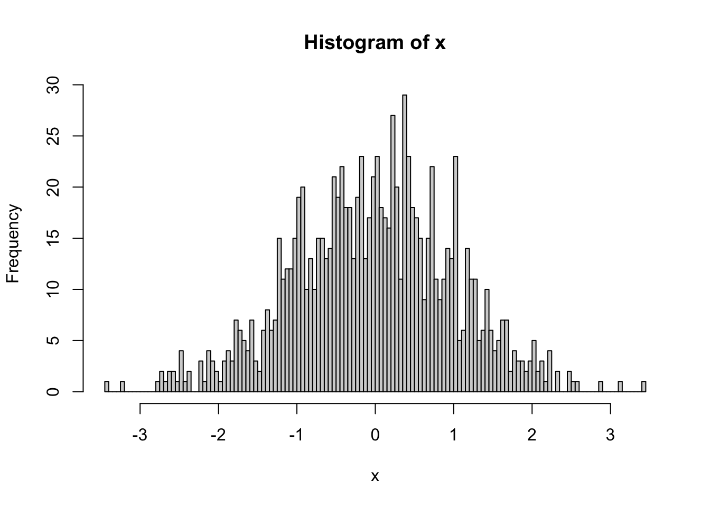
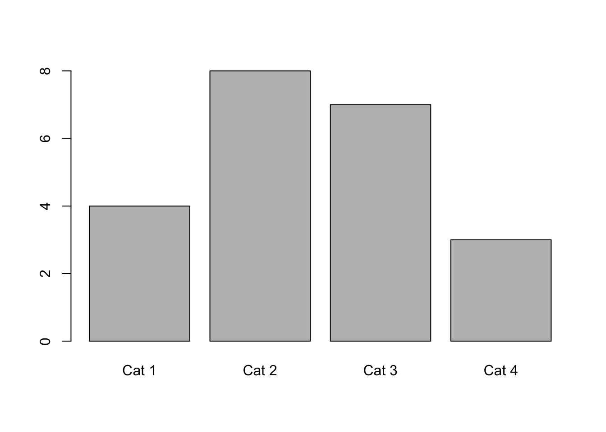
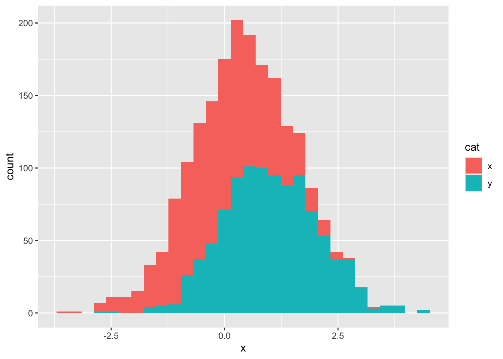
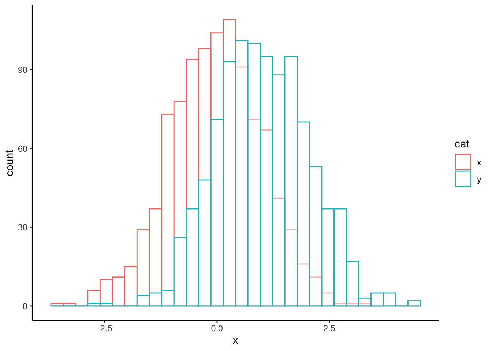
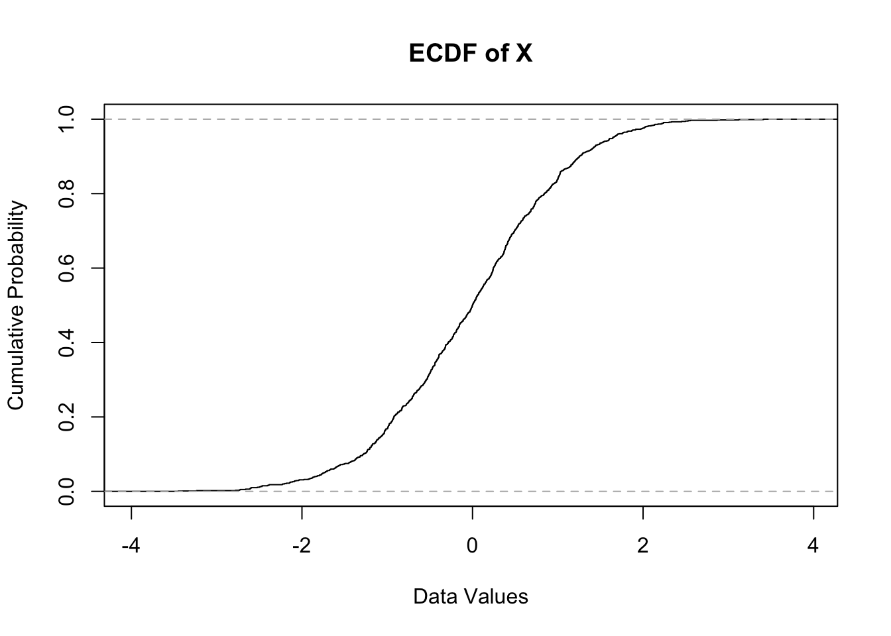

library(tidyverse)5 Diagnosing data visually
5.1 The importance of visual inspection
Inspecting data visually can give us a lot of information about whether data are normally distributed and about whether there are any major errors or issues with our dataset. It can also help us determine if data meet model assumptions, or if we need to use different tests more appropriate for our datasets.
5.2 Sample data and preparation
Before we start, we must load our R libraries.
5.3 Histograms
A histogram is a frequency diagram that we can use to visually diagnose data and their distributions. We are going to examine a histogram using a random string of data. R can generate random (though, actually pseudorandom) strings of data on command, pulling them from different distributions. These distributions are pseudorandom because we can’t actually program R to be random, so it starts from a wide variety of pseudorandom points.
5.3.1 Histograms on numeric vectors
Click to see how to make a default histogram
The following is how to create default histograms on data. If you need to create custom bin sizes, please see the notes under Cumulative frequency plot for data that are not already in frequency format.
# create random string from normal distribution
# this step is not necessary for data analysis in homework
set.seed(8675309)
x <- rnorm(n = 1000, # 1000 values
mean = 0,
sd = 1)
# make histogram
hist(x)
NOTE that a histogram can only be made on a vector of values. If you try to make a histogram on a data frame, you will get an error and it will not work. You have to specify which column you wish to use with the $ operator. (For example, for dataframe xy with columns x and y, you would use hist(xy$y)).
We can increase the number of bins to see this better.
hist(x,breaks = 100)
The number of bins can be somewhat arbitrary, but a value should be chosen based off of what illustrates the data well. R will auto-select a number of bins in some cases, but you can also select a number of bins. Some assignments will ask you to choose a specific number of bins as well.
5.3.2 Histograms on frequency counts
Click to see how to make a histogram with frequency data
Say, for example, that we have a dataset where everything is already shown as frequencies. We can create a frequency histogram using barplot.
count_table <- matrix(nrow = 4, ncol = 2, byrow = T,
data = c("Cat 1", 4,
"Cat 2", 8,
"Cat 3", 7,
"Cat 4", 3)) |>
as.data.frame()
colnames(count_table) <- c("Category","Count")
# ensure counts are numeric data
count_table$Count <- as.numeric(count_table$Count)
# manually create histogram
barplot(count_table$Count, # response variable, counts for histogram
axisnames = T, # make names on plot
names.arg = count_table$Category) # make these the names
5.3.3 ggplot histograms
Click to see how to make fancy histograms (optional)
The following is an optional workthrough on how to make really fancy plots.
We can also use the program ggplot, part of the tidyverse, to create histograms.
# ggplot requires data frames
x2 <- x |> as.data.frame()
colnames(x2) <- "x"
ggplot(data = x2, aes(x = x)) +
geom_histogram()`stat_bin()` using `bins = 30`. Pick better value with `binwidth`.
ggplot is nice because we can also clean up this graph a little.
ggplot(x2,aes(x=x)) + geom_histogram() +
theme_minimal()`stat_bin()` using `bins = 30`. Pick better value with `binwidth`.
We can also do a histogram of multiple values at once in R.
x2$cat <- "x"
y <- rnorm(n = 1000,
mean = 1,
sd = 1) |>
as.data.frame()
colnames(y) <- "x"
y$cat <- "y"
xy <- rbind(x2,y)
head(xy) x cat
1 -0.9965824 x
2 0.7218241 x
3 -0.6172088 x
4 2.0293916 x
5 1.0654161 x
6 0.9872197 xggplot(xy,aes(x = x, fill = cat)) +
geom_histogram()`stat_bin()` using `bins = 30`. Pick better value with `binwidth`.
We can also make this look a little nicer.
ggplot(xy, aes(x = x, colour = cat)) +
geom_histogram(fill = "white", alpha = 0.5, # transparency
position = "identity") +
theme_classic()`stat_bin()` using `bins = 30`. Pick better value with `binwidth`.
We can show these a little differently as well.
ggplot(xy, aes(x = x, fill = cat))+
geom_histogram(position = "identity", alpha = 0.5) +
theme_minimal()`stat_bin()` using `bins = 30`. Pick better value with `binwidth`.
There are lots of other commands you can incorporate as well if you so choose; I recommend checking sites like this one or using ChatGPT.
5.4 Boxplots
Click to see how to make boxplots
We can also create boxplots to visualize the spread of the data. Boxplots include a bar for the median, a box representing the interquartile range between the 25th and 75th percentiles, and whiskers that extend \(1.5 \cdot IQR\) beyond the 25th and 75th percentiles. We can create a boxplot using the command boxplot.
# using pre-declared variable x
boxplot(x)
We can set the axis limits manually as well.
boxplot(x, # what to plot
ylim = c(-4, 4), # set y limits
pch = 19) # make dots solidOn the above plot, outliers for the dataset are shown as dots beyond the ends of the “whiskers”.
5.5 Skewness
Click to read about skewness
Skew is a measure of how much a dataset “leans” to the positive or negative directions (i.e., to the “left” or to the “right”). To calculate skew, we are going to use the moments library.
# don't forget to install if needed!
library(moments)
skewness(x)[1] -0.07158066Generally, a value between \(-1\) and \(+1\) for skewness is “acceptable” and not considered overly skewed. Positive values indicate “right” skew and negative values indicate a “left” skew. If something is too skewed, it may violate assumptions of normality and thus need non-parametric tests rather than our standard parametric tests - something we will cover later!
Let’s look at a skewed dataset. We are going to artificially create a skewed dataset from our x vector.
# create more positive values
x3 <- c(x,
x[which(x > 0)]*2,
x[which(x > 0)]*4,
x[which(x > 0)]*8)
hist(x3)
skewness(x3) |>
round(2)[1] 2.18As we can see, the above is a heavily skewed dataset with a positive (“right”) skew.
5.6 Kurtosis
Click to read about kurtosis
Kurtosis refers to how sharp or shallow the peak of the distribution is (platykurtic vs. leptokurtic). Remember - platykyrtic are plateaukurtic, wide and broad like a plateau, and leptokurtic distributions are sharp. Intermediate distributions that are roughly normal are mesokurtic.
Much like skewness, kurtosis values of \(> 2\) and \(< -2\) are generally considered extreme, and thus not mesokurtic. This threshold can vary a bit based on source, but for this class, we will use a threshold of \(\pm 2\) for both skewness and kurtosis.
Let’s see the kurtosis of x. Note that when doing the equation, a normal distribution actually has a kurtosis of \(3\); thus, we are doing kurtosis \(-3\) to “zero” the distribution and make it comparable to skewness.
hist(x)
# non-zeroed
kurtosis(x) |> round(2)[1] 3.05# zeroed
# put whole thing to be rounded in brackets
(kurtosis(x)-3) |> round(2)[1] 0.05Note when rounding a calculation, the calculation must be in brackets or it will only round the last value.
As expected, out values drawn from a normal distribution are not overly skewed. Let’s compare these to a more kurtic distribution:
xk <- x^3
kurtosis(xk)-3[1] 29.12246What does this dataset look like?
hist(xk,breaks = 100)
As we can see, this is a very leptokurtic distribution.
5.7 Cumulative frequency plot
A cumulative frequency plot shows the overall spread of the data as a cumulative line over the entire dataset. This is another way to see the spread of the data and is often complementary to a histogram.
Click to see how to make a cumulative frequency plot if data is not in histogram/frequency format
The use of the Empirical Cumulative Distribution Function ecdf can turn a variable into what is needed to create a cumulative frequency plot.
plot(ecdf(x)) #Creating a cumulative frequency plotplot(ecdf(x),
xlab = "Data Values", #Labeling the x-axis
ylab = "Cumulative Probability", #Labeling the y-axis
main = "ECDF of X") #Main title for the graph
Click to see how to make a cumulative frequency plot if data is in histogram/frequency format
If you have a list of frequencies (say, for river discharge over several years), you only need to do the cumsum function. For example:
y <- c(1 ,2 ,4, 8, 16, 8, 4, 2, 1)
sum_y <- cumsum(y)
print(y)[1] 1 2 4 8 16 8 4 2 1print(sum_y)[1] 1 3 7 15 31 39 43 45 46Now we can see we have out cumulative sums. Let’s plot these. NOTE that this method will not have the x variables match the dataset you started with, it will only plot the curve based on the number of values given.
plot(x = 1:length(sum_y), # get length of sum_y, make x index
y = sum_y, # plot cumulative sums
type = "l") # make a line plot5.8 Homework: Visualizing data
Directions:
Please complete all computer portions in an rmarkdown document knitted as an html. Upload any “by hand” calculations as images in the HTML or separately on Canvas.
5.8.1 Helpful hint
Click for a useful hint!
HINT: For 3.5, consider just making a vector of the values of interest for a histogram.
For example, see the following. For reference:
cmeans “concatenate”, or place things together in an object.
# numeric vector data for counts
y <- c(17,24,16)
# manually create a histogram using barplot
barplot(y,
# axis names must be true
axisnames = T,
# input names here
# each category as a separate quoted character string
names.arg = c("Cat 1", "Cat 2", "Cat 3"))
5.8.2 Problem 1
The Research Institute Nature and Forest in Brussels, Belgium, conducted a survey of fish from the southern North Sea to help with the identification of fish from seabird diets (Verstraete et al. 2020). We will be looking at the lengths one specific taxon - the Atlantic Herring Clupea harengus.
Copy and run the code below to load in your data. Use the object clupea.lengths for this problem.
# download fish data
fishes <- read_csv("https://zenodo.org/records/4066594/files/reference_data.csv")
# isolate Clupea harengus
clupea <- fishes |>
filter(scientific_name == "Clupea harengus")
# get vector of lengths
# remove missing data
clupea.lengths <- clupea$fish_length_mm |>
na.omit()- Create a histogram of these data.
- Create a cumulative frequency plot of these data.
- Calculate the kurtosis of these data, and make a conclusion about the kurtosis of the dataset.
- Calculate the skewness of these data, and make a conclusion about the skewness of the dataset.
- Create a boxplot of these data.
5.8.3 Problem 2
The Fremont Bridge in Seattle is one of the only bridges that connects the north and south sides of the city, crossing the Fremont Cut - a navigational canal between the Puget Sound and Lake Union & Lake Washington. As such, it is an important transportation corridor. We will be looking at counts of bicyclists, taken hourly for the east (predominately northbound) side over a seven year period (Weber 2019). This dataset has 56,904 records - thus, this is not something that would be easily done without the use of a program like R!
bicycles <- read_csv("https://zenodo.org/records/2648564/files/Fremont_Bridge_Hourly_Bicycle_Counts_by_Month_October_2012_to_present.csv")
bike.count <- bicycles$`Fremont Bridge East Sidewalk` |>
na.omit()- Create a histogram of these data.
- Create a cumulative frequency plot of these data.
- Calculate the kurtosis of these data, and make a conclusion about the kurtosis of the dataset.
- Calculate the skewness of these data, and make a conclusion about the skewness of the dataset.
- Create a boxplot of these data.
5.8.4 Problem 3
Take the object bike.count from the previous problem and perform a log transformation of the data. To do this, we will take the natural log of the dataset plus one. We must add 1 to every value in the dataset, because the natural log of 0 is negative infinity; adding one makes every value in the dataset quantifiable as the minimum value for any count data is 0.
Perform the following action on your computer, replacing x with your bike.data object. Name your object log.bikes instead of log.x.
log.x <- log(x + 1)After performing the log transformation, complete the following.
- Create a histogram of these data.
- Create a cumulative frequency plot of these data.
- Calculate the kurtosis of these data, and make a conclusion about the kurtosis of the dataset.
- Calculate the skewness of these data, and make a conclusion about the skewness of the dataset.
- Create a boxplot of these data.
- How did the log transformation change these data?
5.8.5 Problem 4
Is there pseudoreplication in the bicycle dataset? Why or why not?
5.9 Acknowledgment
Thanks to Hernan Vargas & Riley Grieser for help in formatting this page. Additional comments provided by BIOL 305 classes.